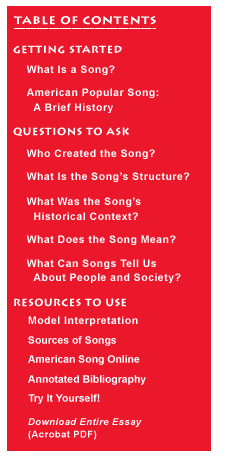
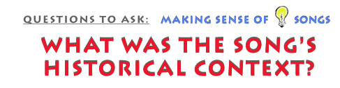

This is an archived copy of History Matters, provided by the Roy Rosenzweig Center for History and New Media. To explore this content in a new interface, visit Who Built America?.

 |
 |
|
Historical context includes all of the factors relevant to understanding and interpreting a song at a given moment in history. Many features that appear unusual or unique today turn out to be typical when the work is viewed in its historical context. On the other hand, some features that seem unremarkable on first listen turn out to be unusual, thus interesting or significant. Finally, the work at hand may well be a response to an earlier work in the same genre—for example a cover (a remake of an earlier version), an imitation, an answer, or a parody. It is helpful to distinguish between “primary” and “secondary” contexts. Primary contexts are the ones that would have been most important to people at the time a song was first created. Secondary contexts are contexts of the song at any subsequent period from then to the present. Take, for example, “Love in Vain” a famous blues that Robert Johnson first recorded in 1936 and that has been sung by many subsequent performers. The primary context of “Love in Vain” would include things like when and where was the original recording session? What was the recording company? What other singers and songs did the company record? What kind of guitar did Johnson play? How much was he paid? Secondary contexts are ones at any point in time from the song’s creation onward that may or may not have shaped the particular piece of music. They are, however, contexts that help listeners and students understand its significance and its relationship to the society and culture from which it emerged. Secondary contexts for “Love in Vain” might include things like the history of Mississippi Delta blues, race relations in the South, railroads in the early twentieth century, songs about leave-taking, and metaphors of light in American poetry. What secondary contexts matter most will depend on the questions asked of the music and how it is being used as a source. Primary contexts can be very broad, secondary contexts almost limitless. Both are significant, but it is important distinguish between them and to begin by establishing the primary context to the extent possible. Contexts form a sequence, not just a chronological one but also a sequence of evolving meanings. Unless we begin this sequence at the beginning, we risk misreadings and misunderstandings. The meaning of a song can vary drastically from person to person. While
one person might imagine a song is about political protest and resistance,
another might find the same song represents escapism, joy, or just a lot
of hot air. Perhaps never was this more evident than in early reactions
to bebop in the 1940s. Bebop was a new style of jazz music developed by
African-American musicians during late night jam sessions in New York
City. To many, it sounded like everything popular swing music was not.
Bebop featured willfully dissonant harmonies, breakneck tempos, and frenetic
rhythms that made dancing difficult. Virtuosic bebop innovators such as
Dizzy Gillespie and Charlie Parker improvised instrumental solos so energetic
and inventive that they often left the audience in slack-jawed awe. Upon
hearing bebop, many accomplished swing musicians chose to sell their instruments
or run home and practice. What did bebop mean? Between 1945 and 1950, debate raged among musicians and critics about how the new sounds of bebop should be interpreted. Was bebop a joke perpetrated by young musicians who did not understand the jazz tradition? Or was it a learned extension of previous styles? Was bebop a political statement about postwar racism? Or was it simply a fun new style that had little connection to American racial politics? Click to hear an example of swing music (“Jumpin’ at the Woodside” by Count Basie and his band) and of the more controversial bebop (“Night in Tunisia” by saxophonist Charlie Parker). Examine the following quotes about bebop and think about which of these various positions each speaker might take. “Bebop is a music of revolt: a revolt against big bands, arrangers,
vertical harmonies, soggy rhythms, non-playing orchestra leaders, Tin
Pan Alley—against commercialized music in general.” Bebop players “like to wear berets, goatees and green-tinted horn-rimmed
glasses, and talk about their ‘interesting new sounds,’”
while their “rapid-fire, scattershot talk has about the same pace
and content as their music.” “How to use notes differently. That’s it. Just how to use notes
differently.” “What bebop amounts to: hot jazz overheated with overdone lyrics
full of bawdiness, references to narcotics and doubletalk.” “This is the sort of bad taste and ill-advised fanaticism that has
thrown innumerable impressionable young musicians out of stride.” “[Bebop musicians] want to carve everyone else because they’re
full of malice, and all they want to do is show you up, and any old way
will do as long as it’s different from the way you played it before.
So you get all them weird chords which don’t mean nothing, and first
people get curious about it just because it’s new, but soon they
get tired of it because it’s really no good and you got no melody
to remember and no beat to dance to. So they’re all poor again and
nobody is working, and that’s what that modern malice done for you.” “I don’t want you playing that Chinese music in my band!” “Everytime a cop hits a Negro with his Billy club, that old club
says, ‘BOP! BOP!…BE-BOP!…MOP!…BOP!…That’s
what Bop is. Them young colored kids who started it, they know what bop
is.” “We didn’t go out and make speeches or say, ‘Let’s
play eight bars of protest.’ We just played our music and let it
go at that. The music proclaimed our identity; it make every statement
we truly wanted to make.”
|
|